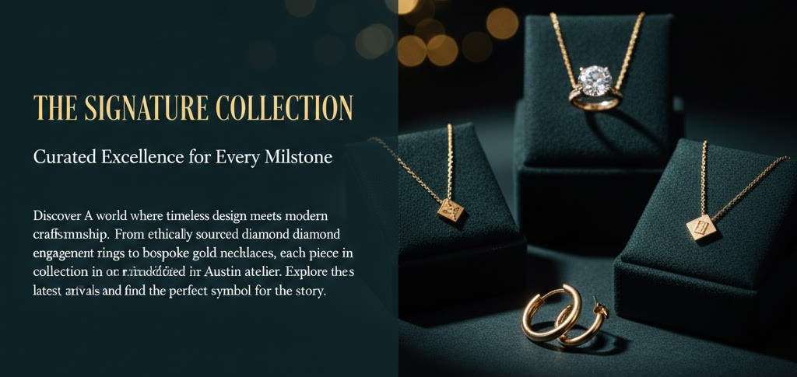

The Signature Collection Curated Excellence for Every Milestone
Discover a world where timeless design meets modern craftsmanship. From ethically sourced diamond engagement rings to bespoke gold necklaces, each piece in our collection is handcrafted in our Austin atelier. Explore our latest arrivals and find the perfect symbol for your story.
Read More